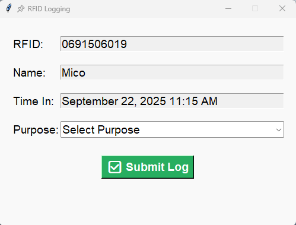
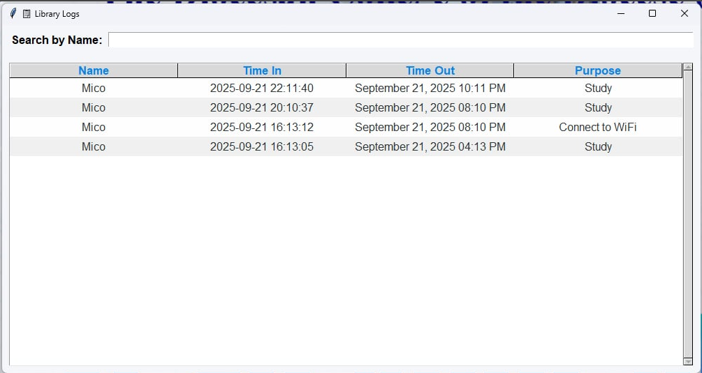
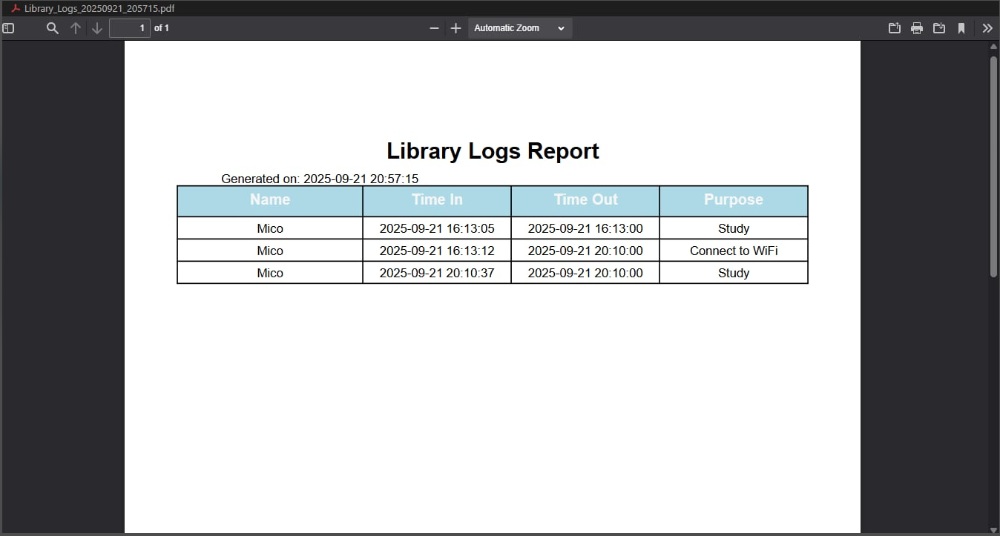
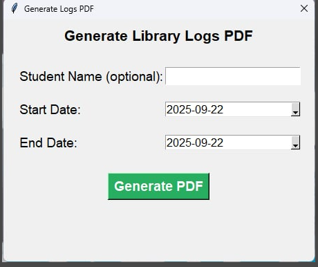
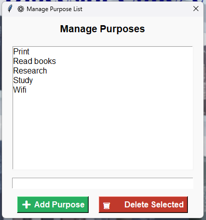
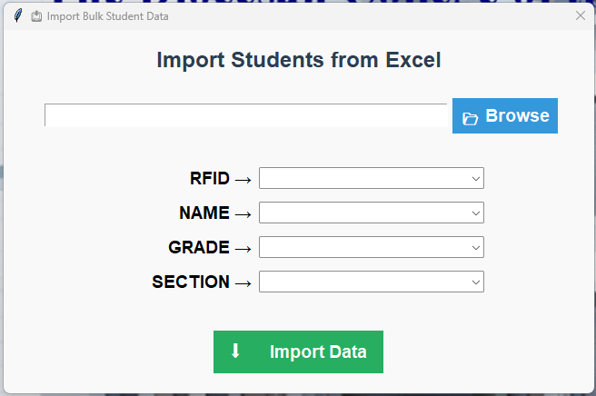

Discover the powerful tools and functionalities of CONNECT, an RFID-based library logging system built to simplify student tracking, enhance library management, and generate insightful reports. 📚
Seamless and secure student authentication using RFID cards.
Automatically track student entry and exit for accurate library usage records.
Export detailed attendance and usage reports in PDF format for easy record-keeping and analysis.
Quickly find specific logs or student data by name, date, or purpose of visit.
Administrators can easily modify the list of visit purposes to match library policies.
Save time by importing multiple student records at once via an Excel file.
